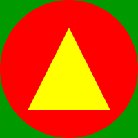

By Roel Nieskens. More info on Github!
Order of images: font glyph, SVG as image tag, SVG inlined.
| Glyph | Image | Inline | Description |
|---|---|---|---|
| A | | 0041: Original SVG | |
| B | | 0042: Rotated 10 degrees with inline style on group | |
| C | | 0043: Opacity: 0.5 with inline style on group | |
| D | | 0044: Animating opacity from 0.1 to 1 | |
| E | | 0045: JavaScript console.log saying "Hello from glyph 0045!" | |
| F |  | 0046: Turn background and triangle black on hover |